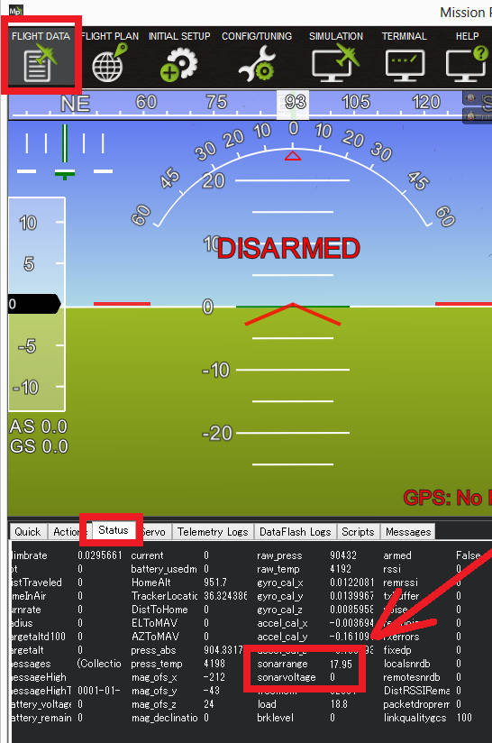

Leddar One Lidar¶
The Leddar One Lidar is a light weight and reasonably priced lidar with 40m range, 70hz update rate and 3-degree diffuse beam. For more details please refer to the datasheet.

Note
Support for LeddarOne is available in Copter-3.4.2 (or higher), Plane-3.8 (or higher), Rover-3.1 (or higher).
Warning
Severe spikes in the reported range have been found in some Coptere-3.4.2 user’s logs so we recommend careful ground testing of the distances reported or wait until Copter-3.4.3 is released by which time we hope to have the cause of these spikes identified.
Connecting to the AutoPilot¶
The sensor’s serial connection can be connected to any spare serial port (i.e. Telem1, Teleme2, Serial4) on the autopilot. Connect the lidar’s RX line to the autopilot’s UART TX line, the lidar’s TX line to the UART’s RX then also connect the GND and 5V lines. The image below shows how the sensor output pins can be connected to a Pixhawk’s Serial4 port.
{kind=link}
You then need to setup the serial port and rangefinder parameters. If you have used the SERIAL4/5 port on the Pixhawk then you would set the following parameters for the first rangefinder (this is done on the Mission Planner’s Config/Tuning | Full Parameter List page):
SERIAL4_PROTOCOL = 9 (Lidar)
SERIAL4_BAUD = 115200
RNGFND1_TYPE = 12 (LeddarOne)
RNGFND1_SCALING = 1
RNGFND1_MIN_CM = 5
RNGFND1_MAX_CM = 4000 (40m) This is the distance in centimeters that the rangefinder can reliably read.
RNGFND1_GNDCLEAR = 10 or more accurately the distance in centimetres from the range finder to the ground when the vehicle is landed. This value depends on how you have mounted the rangefinder.
If you instead were using the Telem2 port on the Pixhawk then you would set SERIAL2_PROTOCOL = 9, and SERIAL2_BAUD = 115200
Testing the sensor¶
Distances read by the sensor can be seen in the Mission Planner’s Flight Data screen’s Status tab. Look closely for “sonarrange”.
{kind=link}